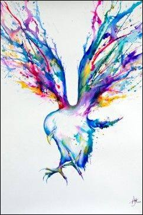

poems

a poem I wroted...
and finally,
that One Beautiful Stitch in God's work,
in this "whatsa whatsa Christ-follower,"
this mystery, this promise,
so plain and perfect,
so laid out like a buffet, just shiny,
had set him free again,
just from worry and despair and all of it,
and he saw in his own tarnished, enjoyably animal heroism,
all the triumphs and sorrows:
a fountain of hope, tossed off like it was nothing
you are SWIMMING IN IT,
God's love, ba-ba-loo! ! 😆😂✝️❤️🕊️
(it's this, "N-archipelago" - No, No, No!! to paranoia! never again! 😆 live in the soup like you mean it! ✝️🕊️)
that One Beautiful Stitch in God's work,
in this "whatsa whatsa Christ-follower,"
this mystery, this promise,
so plain and perfect,
so laid out like a buffet, just shiny,
had set him free again,
just from worry and despair and all of it,
and he saw in his own tarnished, enjoyably animal heroism,
all the triumphs and sorrows:
a fountain of hope, tossed off like it was nothing
you are SWIMMING IN IT,
God's love, ba-ba-loo! ! 😆😂✝️❤️🕊️
(it's this, "N-archipelago" - No, No, No!! to paranoia! never again! 😆 live in the soup like you mean it! ✝️🕊️)
on why I ✝️ LOVE ✝️🕊️ "The Last Temptation of Christ", by Nikos Kazantzakis:
One of my faves, The Last Temptation of Christ is a fictional account by Nikos Kazantzakis dramatizing the moment on the Cross just before the Consummatum.
Christ in his delirium imagines a life with a wife and children, before God calls Him again to the Cross, to Calvary.
When Christ says “IT. IS. ACCOMPLISHED!! 😆” in The Last Temptation of Christ — it’s not relief.
It’s not sadness. It’s not even closure or achievement.
It’s a FULL-BODY GUFFAW, A FULL-THROTTLE DETONATION of his reason d'etre, his soul.
Not even “I've done it!," but: “OH HOLY WOW-A-MOLIE! — GOD IS HERE!”
The veil doesn’t tear because of nails.
The veil tears because the **Word rips back through the atmosphere and says YES.**
IT. IS. ACCOMPLISHED!! ❤️ 😆 ✝️🕊️ A rumbling bass note so deep, a laugh so raw, it's literally still happening!